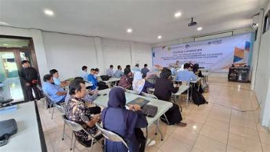
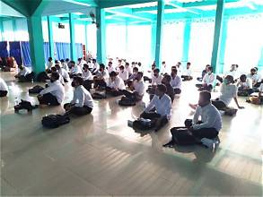
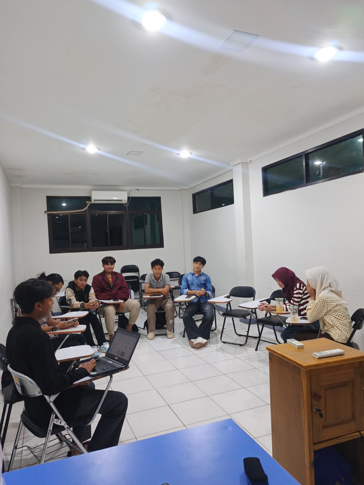
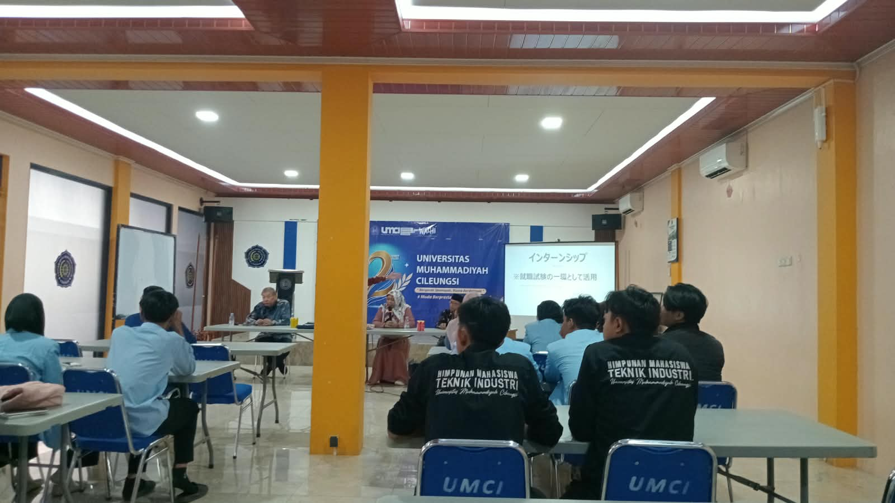
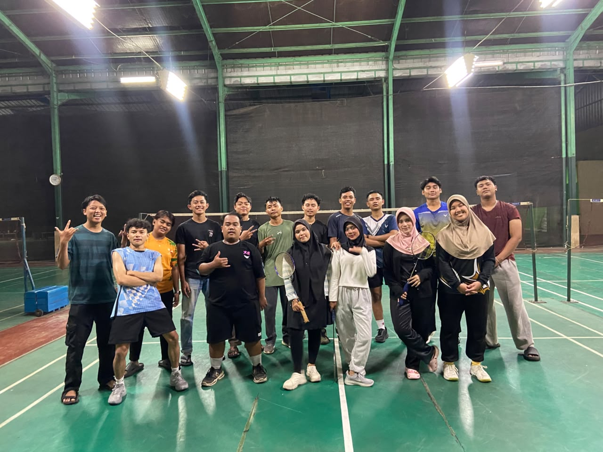
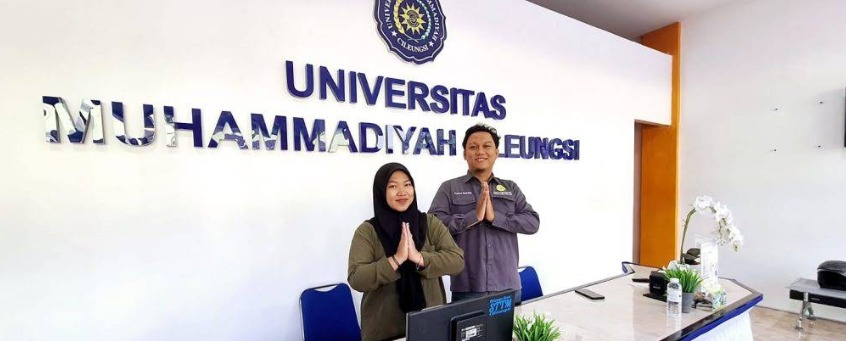

Seminar UMCI
Momen kegiatan Keberlangsungan seminar UMCI.
Dokumentasi kegiatan, kebersamaan, dan hobi

Momen kegiatan Keberlangsungan seminar UMCI.

Galeri Foto Kegiatan Stadium General dan Darul Arqom Mahasiswa Baru STTM Cileungsi Tahun Akademik 2020.

Foto Keberlangsungannya Rapat HIMATIF.

Foto Keberlangsungan mata kuliah, Mahasiswa di kelas.

Berpartisipasi dalam kegiatan olahraga bersama.

Lobi Universitas Muhammadiyah Cileungsi (UMCI) merupakan area penerima tamu yang menampilkan identitas kampus dengan suasana nyaman dan ramah.